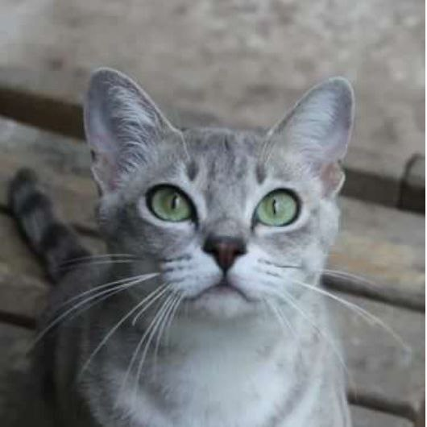
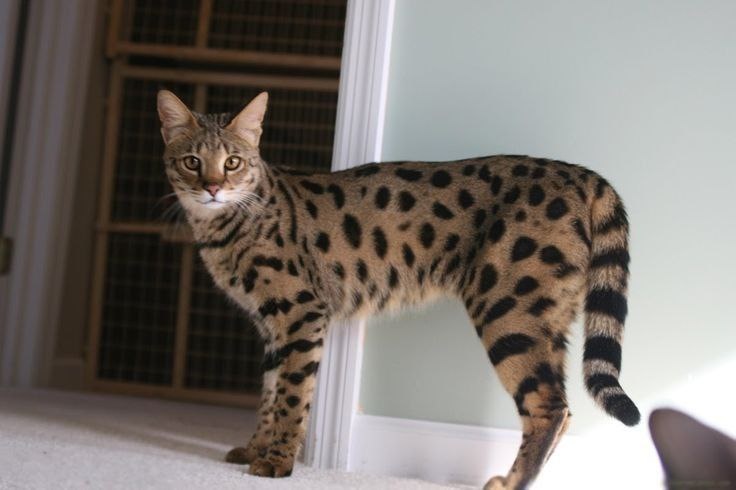
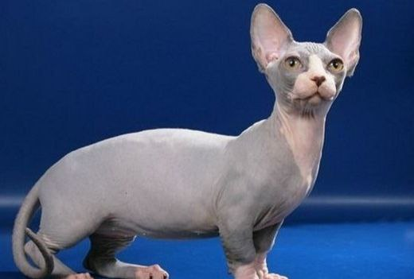
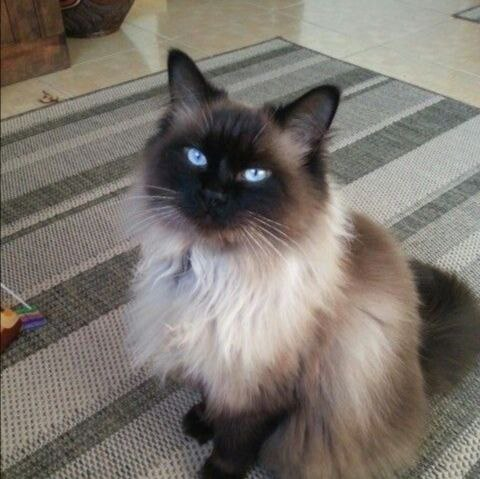

Каракет
Каракет є гібридною породою домашньої кішки...
Докладніше

Абісинська
Абіссінці - активні коти-компаньйони...
Докладніше

Австралійська димчаста
Ця порода не визнана ніде, крім Австралії...
Докладніше

Ашера
Той випадок, коли люди винаходять вже винайдене...
Докладніше

Бамбіно
Експерементальна порода кішок, що з'явилася...
Докладніше

Бірманська
Забарвлення цих кішок - завжди тільки колор-поінт...
Докладніше